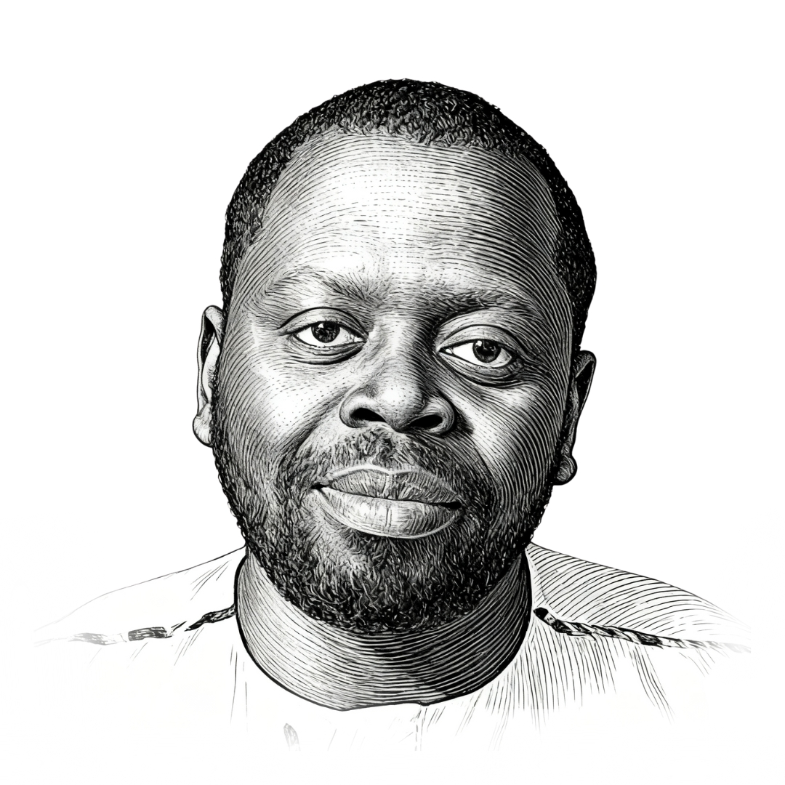

Chercheur en études interculturelles & postcoloniales · EFG Pforzheim
Pasteur, chercheur, auteur et fondateur d'origine camerounaise. J'explore l'histoire postcoloniale de l'Allemagne et m'engage pour la compréhension interculturelle : dans l'Église, lors de conférences et à travers les médias numériques.
Conférences · Panels · Ateliers · Consulting